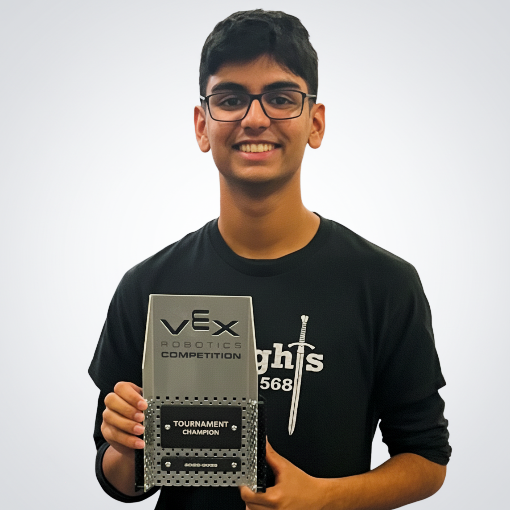
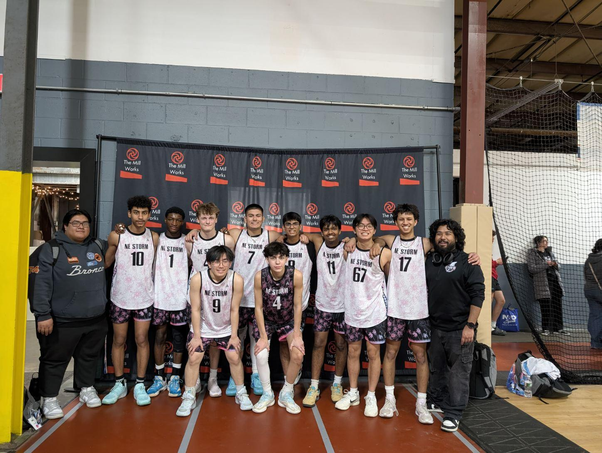
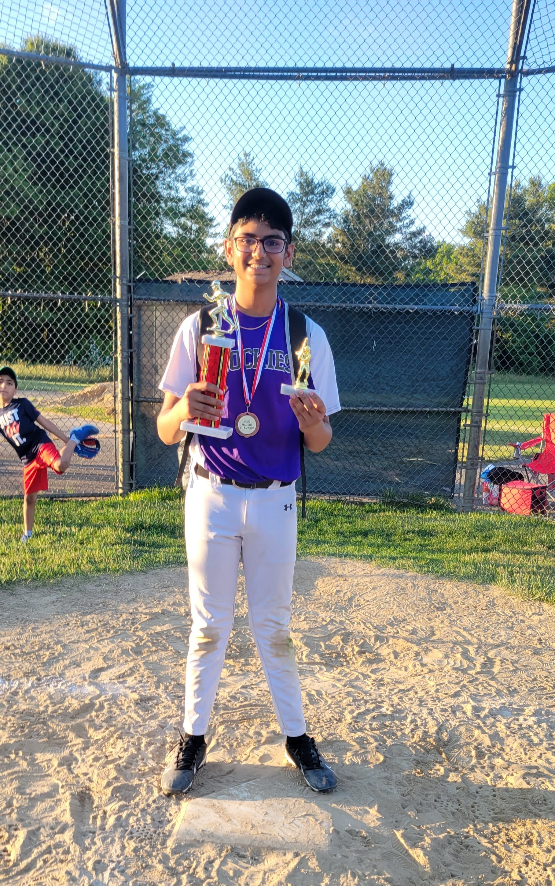

Hello! I’m a Junior at North Andover High School (NAHS). I am passionate about STEM, with a specific focus on robotics and computational biology. Outside of school, I play volleyball, love listening to music, and enjoy traveling whenever I can.
I'm thrilled to have been accepted into the prestigious Northeastern University 2026 Young Scholars Program, where I will conduct independent research for 6 weeks in Prof. Rouzbeh Amini's lab, which focuses on biomechanics and computational modeling of soft tissue — an intersection that connects directly to my interests in computational biology and engineering.
I was also a finalist for the prestigious 2026 ADA Forsyth Student Scholar Summer Program, an NIH-funded biomedical research internship at the ADA Forsyth Institute in Somerville, MA.

Research Interests
My interest in Computational Biology is deeply personal. After losing my grandfather to Multiple System Atrophy (MSA), my father explained that there is currently no cure for this rare neurodegenerative disease. That conversation changed how I viewed science. I realized that when there aren’t clear answers, research is how people slowly work toward understanding.
As I explored science beyond my coursework, I became fascinated by how artificial intelligence can be applied to biology. I first learned about AlphaGo and was amazed by how a computer could learn and improve through experience. This led me to read about AlphaFold and how similar ideas could be used to predict protein structures, a problem that had challenged scientists for decades. When I later learned about AlphaGenome, I was struck by how much remains unknown, especially in non-coding regions of DNA.
I'd like to better understand how computational tools can be used alongside biological data to study real diseases like MSA.
Currently Exploring
- •DeepMind's AlphaGenome and how it predicts the effects of non-coding genetic variants
- •Research on alpha-synuclein misfolding and the role of the SNCA gene in MSA, Parkinson's, and related diseases
- •ADA Forsyth Institute research on the oral microbiome and its connection to neuroinflammation
Technical Projects
Repositories & CAD FilesFusion 360 Assemblies
CAD project directories and stress analysis graphs will be cataloged here.
Code Assignments
Python algorithms and computational notebooks will be embedded here.
Hobbies & Personal Interests
- Sports — NAHS Junior Varsity Volleyball, club volleyball, and NAMS baseball
- Music & Concerts — A wide range of genres, with a particular love for live shows
- Travel — Exploring new places and cultures whenever I get the chance

